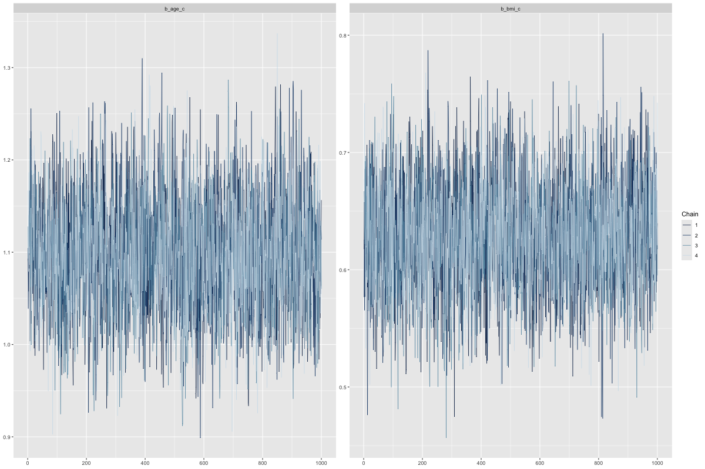

Introduction
- Diabetes mellitus (DM) affects over 37 million U.S. adults.
- Major risk factors include age, BMI, sex, and race/ethnicity.
- Traditional logistic regression can produce unstable estimates with missing data or small subgroups.
- Bayesian logistic regression addresses these issues by incorporating prior information and providing richer uncertainty estimates.
- This analysis compares two modeling frameworks using NHANES 2013–2014 data:
- Survey-weighted logistic regression
- Bayesian logistic regression (brms in R)
Background & Motivation
- Why Bayesian?
- Traditional logistic regression can produce unstable estimates with missing data or small subgroups.
- Bayesian inference incorporates prior knowledge and fully quantifies uncertainty through posterior distributions.
- Prior Research
- Bayesian models have improved parameter stability in epidemiologic studies.
- However, few analyses directly compare Bayesian and frequentist logistic regression for diabetes prediction.
- Goal
- Assess whether Bayesian logistic regression improves interpretability and stability compared to frequentist approaches using NHANES 2013–2014 data.
Study Design
- Dataset: NHANES 2013–2014
- n = 5,769 adults aged ≥20 years
- Variables: age, BMI, sex, race/ethnicity, and doctor-diagnosed diabetes
- Survey Design:
- Multistage, complex sampling with strata, clusters, and sample weights
- Weights were normalized and used as importance weights during modeling
Dataset Overview
Source: NHANES 2013–2014
Cohort: 5,769 adults aged ≥20 years
Merged Components:
- DEMO_H (Demographics)
- BMX_H (Body Measures)
- DIQ_H (Diabetes Questionnaire)
Outcome: Doctor-diagnosed diabetes (diabetes_dx)
Predictors:
- Age (standardized z-score)
- BMI (standardized z-score)
- Sex (Female vs Male)
- Race/Ethnicity (Non-Hispanic White reference group)
Purpose:
Prepare a unified dataset for the survey-weighted and Bayesian models.
Data Preparation
- Missing Data:
- Small proportion of missingness (~3–4%)
- Final Bayesian model used complete-case data, as exclusions removed the limited missingness.
- Standardization:
- Continuous predictors (Age, BMI) converted to z-scores for comparability
- Recoding:
- Simplified categorical variables (e.g., binary Sex, grouped Race/Ethnicity)
- Goal:
- Produce a clean, standardized dataset for both modeling frameworks
Modeling Workflow
- Step 1 – Acquisition:
- NHANES 2013–2014 (DEMO_H, BMX_H, DIQ_H);
- n = 5,769 adults aged ≥20 years
- Step 2 – Preprocessing:
- Standardized age & BMI, recoded sex and race/ethnicity
- Step 3 – Final Analytic Dataset:
- Applied exclusions and standardization to produce a clean dataset
- Both models used the same complete-case adult dataset (n = 5,769)
- Step 4 – Modeling Frameworks:
- Survey-weighted logistic regression (design-based MLE)
- Bayesian logistic regression (brms, Hamiltonian Monte Carlo)
- Step 5 – Diagnostics:
- R-hat values ≈ 1.00 indicate strong convergence
- Effective sample sizes (ESS) > 2000 confirm sufficient sampling
- Posterior predictive checks and Bayesian R² ≈ 0.13 show good model fit
- Step 6 – Interpretation:
- Compared parameter estimates across all frameworks
- Identified consistent predictors: higher age and BMI increase diabetes risk
- Female sex showed a protective effect; race/ethnicity differences remained significant
- Bayesian credible intervals provided clear uncertainty quantification
Exploratory Data Analysis (EDA)
- Missing Data:
- Low overall (≈3–4%) in BMI and diabetes variables
- Minimal missingness (≈3–4%) and final dataset contained complete cases after merging.
- Outcome Distribution:
- Diabetes prevalence ≈ 11% among U.S. adults
- Predictor Patterns:
- Higher age and BMI strongly associated with diabetes
- Non-Hispanic Black and Hispanic adults show higher prevalence
- Females slightly lower prevalence than males
- Key Takeaway:
- Observed relationships align with prior epidemiologic research, confirming a solid analytical foundation.
Modeling Frameworks
- Survey-Weighted Logistic Regression
- Accounts for NHANES’ complex sampling design (strata, clusters, weights)
- Bayesian Logistic Regression (brms, Hamiltonian Monte Carlo)
- Incorporates prior information and provides full uncertainty quantification
Goal:
Compare coefficient stability, uncertainty estimation, and overall model fit across both frameworks.
Code
# Bayesian logistic regression using brms
library(brms)
bayes_fit <- brm(
diabetes_dx ~ age_c + bmi_c + sex + race,
data = adult,
family = bernoulli(),
prior = c(
prior(normal(0, 2.5), class = "b"), # slopes
prior(student_t(3, 0, 10), class = "Intercept") # intercept
),
chains = 4, iter = 2000, warmup = 1000,
seed = 123
)
Priors:
Sampling:
- 4 chains × 2000 iterations (1000 warm-up)
Diagnostics Expected:
- Rhat ≈ 1.00, ESS > 2000, Bayesian R² ≈ 0.13
Code
summary(bayes_fit) # coefficient summaries and Rhat
bayes_R2(bayes_fit) # Bayesian R²
pp_check(bayes_fit, nsamples = 50) # posterior predictive check
Model Comparison
- Consistent Predictors Across All Models:
- Higher age and BMI → increased diabetes risk
- Female sex → lower odds
- Race/ethnicity differences persisted
- Effect Sizes:
- Nearly identical across survey-weighted and Bayesian frameworks
- Uncertainty:
- Minor variation in interval widths reflects each model’s uncertainty treatment
Model Comparison Summary
- Both frameworks identified the same significant predictors: age, BMI, sex, and race/ethnicity.
- Bayesian estimates matched frequentist models in magnitude and direction, confirming robustness.
- Interval widths varied slightly due to differences in how each framework handles uncertainty.
Odds Ratios (95% CI) Across Survey-Weighted and Bayesian Models
| Age (per 1 SD) |
3.03 (2.70 – 3.40) |
2.99 (2.66 – 3.39) |
| BMI (per 1 SD) |
1.89 (1.65 – 2.15) |
1.87 (1.71 – 2.05) |
| Black (vs. White) |
1.67 (1.16 – 2.40) |
1.70 (1.26 – 2.30) |
| Female (vs. Male) |
0.53 (0.41 – 0.68) |
0.52 (0.42 – 0.63) |
| Hispanic (vs. White) |
1.59 (1.17 – 2.17) |
1.53 (0.94 – 2.43) |
| Other (vs. White) |
2.33 (1.55 – 3.50) |
2.26 (1.56 – 3.24) |
| Mexican American (vs. White) |
2.04 (1.49 – 2.79) |
1.99 (1.41 – 2.80) |
MCMC Diagnostics
- R-hat ≈ 1.00 for all parameters → strong convergence
- Effective Sample Size (ESS > 2000) → efficient sampling
- Trace plots show stable mixing across chains
- Autocorrelation low across lags → good efficiency

Discussion, Limitations & Conclusion
- Key Findings: Age and BMI were the strongest predictors; sex was protective; racial disparities persisted.
- Consistency: Both models — Bayesian and survey-weighted — yielded nearly identical results.
- Advantages: The Bayesian approach enhanced interpretability, providing richer uncertainty estimates via credible intervals and PPCs.
- Limitations: Approximate weighting and non-tuned priors; results limited to the 2013–2014 cycle.
- Conclusion: Bayesian inference complements frequentist methods by improving transparency, interpretability, and uncertainty quantification.
Key Takeaways
- Consistent results across both modeling frameworks
- Bayesian approach adds clarity through credible intervals and PPCs
- Strong convergence and calibration confirm reliability
- Future work: extend to later NHANES cycles and hierarchical priors
Future Directions
- Expand Temporal Scope
- Incorporate additional NHANES cycles to assess temporal trends.
- Model Refinement
- Use hierarchical priors to capture subgroup variation.
- Explore Bayesian model averaging for improved predictive accuracy.
- Validation
- Perform external validation on independent datasets.
- Conduct sensitivity analyses for priors and imputation assumptions.